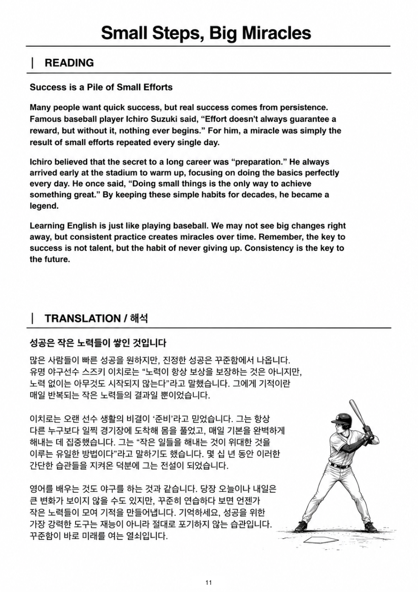

Small Steps, Big Miracles
읽고 · 말하고 · 생각하는 영어
학습 안내
Small Steps, Big Miracles
핵심 단어 · Key Vocabulary
Persistence
끈기, 지속성
Warm up
몸을 풀다, 준비 운동을 하다
Guarantee
보장하다
Achieve
달성하다, 이루다
Reward
보상
Decade
10년 (decades: 몇 십 년)
Miracle
기적
Consistent
꾸준한, 일관된
Preparation
준비
Consistency
꾸준함, 일관성
회화 패턴 · Speaking Patterns
1. The key to [noun / -ing] is ~
(~의 핵심/열쇠는 ~입니다)
The key to learning English is consistency.
영어를 배우는 것의 핵심은 꾸준함입니다.
2. The only way to [base verb] is ~
(~하는 유일한 방법은 ~입니다)
Doing small things is the only way to achieve something great.
작은 일들을 해내는 것이 위대한 것을 이루는 유일한 방법입니다.
본문 읽기 · Reading
Success is a Pile of Small Efforts
Many people want quick success, but real success comes from persistence. Famous baseball player Ichiro Suzuki said, “Effort doesn’t always guarantee a reward, but without it, nothing ever begins.” For him, a miracle was simply the result of small efforts repeated every single day.
Ichiro believed that the secret to a long career was “preparation.” He always arrived early at the stadium to warm up, focusing on doing the basics perfectly every day. He once said, “Doing small things is the only way to achieve something great.” By keeping these simple habits for decades, he became a legend.
Learning English is just like playing baseball. We may not see big changes right away, but consistent practice creates miracles over time. Remember, the key to success is not talent, but the habit of never giving up. Consistency is the key to the future.
한국어 해석 · Translation
성공은 작은 노력들이 쌓인 것입니다
많은 사람들이 빠른 성공을 원하지만, 진정한 성공은 꾸준함에서 나옵니다. 유명 야구선수 스즈키 이치로는 “노력이 항상 보상을 보장하는 것은 아니지만, 노력 없이는 아무것도 시작되지 않는다”라고 말했습니다. 그에게 기적이란 매일 반복되는 작은 노력들의 결과일 뿐이었습니다.
이치로는 오랜 선수 생활의 비결이 ‘준비’라고 믿었습니다. 그는 항상 다른 누구보다 일찍 경기장에 도착해 몸을 풀었고, 매일 기본을 완벽하게 해내는 데 집중했습니다. 그는 “작은 일들을 해내는 것이 위대한 것을 이루는 유일한 방법이다”라고 말하기도 했습니다. 몇 십 년 동안 이러한 간단한 습관들을 지켜온 덕분에 그는 전설이 되었습니다.
영어를 배우는 것도 야구를 하는 것과 같습니다. 당장 오늘이나 내일은 큰 변화가 보이지 않을 수도 있지만, 꾸준히 연습하다 보면 언젠가 작은 노력들이 모여 기적을 만들어냅니다. 기억하세요, 성공을 위한 가장 강력한 도구는 재능이 아니라 절대로 포기하지 않는 습관입니다. 꾸준함이 바로 미래를 여는 열쇠입니다.
토론 질문 · Discussion Questions
Do you have any small daily habits? How do they help you?
매일 실천하는 작은 습관이 있으신가요? 그 습관들이 어떤 도움이 되나요?
What is something you worked on consistently for a long time?
오랜 시간 동안 꾸준히 노력해 본 일은 무엇인가요?
How do you usually overcome a slump or a lack of motivation?
슬럼프나 의욕 저하가 찾아올 때 보통 어떻게 극복하시나요?
Between talent and effort, which one do you think is more important for success?
재능과 노력 중, 성공을 위해 무엇이 더 중요하다고 생각하시나요?
예시 답변 · Sample Answers
Answer: Yes, I drink a glass of warm water every morning and stretch for five minutes. It helps me wake up and start the day with good energy.
네, 저는 매일 아침 따뜻한 물 한 잔을 마시고 5분 동안 스트레칭을 합니다. 정신을 깨우고 좋은 에너지를 얻으며 하루를 시작하는 데 도움이 됩니다.
Answer: I have been working out at the gym three times a week for two years. It was hard at first, but now it makes me feel healthier and more confident.
저는 2년 동안 일주일에 세 번씩 헬스장에서 운동을 해왔습니다. 처음에는 힘들었지만, 지금은 더 건강해지고 자신감도 생겼습니다.
Answer: When I feel unmotivated, I take a complete break for a day or two without feeling guilty. After resting, I start again with very small goals.
의욕이 떨어질 때는 죄책감을 느끼지 않고 하루나 이틀 정도 완전히 쉽니다. 푹 쉬고 난 뒤 아주 작은 목표부터 다시 시작합니다.
Answer: I think effort is more important because talent without effort won't last long. Consistent effort always builds true competence over time.
저는 노력이 더 중요하다고 생각합니다. 노력 없는 재능은 오래가지 않기 때문입니다. 꾸준한 노력은 시간이 지나면서 항상 진짜 실력을 만들어 냅니다.
오늘의 메시지 · Today’s Message
“Piling up small things is the only way to reach somewhere incredible.” — Ichiro
작은 것들을 하나씩 쌓아가는 것이 놀라운 곳에 도달하는 유일한 길입니다. — 이치로
영작 연습 · Write It Yourself
다음 단어를 사용하여 영작해보세요.
1. persistence
->
2. consistency
->
원본 스캔
PDF 14쪽 원본 보기
